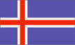

{kind=link}


![[Country map of Iceland]](../maps/ic-map.jpg)
| Iceland |  |
|
| | |
| Introduction |
Background: Settled by Norwegians and Celtic (Scottish and Irish) immigrants during the late 9th and 10th centuries, Iceland boasts the world's oldest parliament, the Althing, established in 930. Independent for over 300 years, Iceland was subsequently ruled by Norway and Denmark. Limited home rule was granted in 1874 and complete independence attained in 1944. Literacy, longevity, income, and social cohesion are first-rate by world standards.
| Geography |
Location: Northern Europe, island between the Greenland Sea and the North Atlantic Ocean, northwest of the UK
Geographic coordinates: 65 00 N, 18 00 W
Map references: Arctic Region
Area:
total:
103,000 sq km
land:
100,250 sq km
water:
2,750 sq km
Area - comparative: slightly smaller than Kentucky
Land boundaries: 0 km
Coastline: 4,988 km
Maritime claims:
continental shelf:
200 nm or to the edge of the continental margin
exclusive economic zone:
200 nm
territorial sea:
12 nm
Climate: temperate; moderated by North Atlantic Current; mild, windy winters; damp, cool summers
Terrain: mostly plateau interspersed with mountain peaks, icefields; coast deeply indented by bays and fiords
Elevation extremes:
lowest point:
Atlantic Ocean 0 m
highest point:
Hvannadalshnukur 2,119 m
Natural resources: fish, hydropower, geothermal power, diatomite
Land use:
arable land:
0%
permanent crops:
0%
permanent pastures:
23%
forests and woodland:
1%
other:
76% (1993 est.)
Irrigated land: NA sq km
Natural hazards: earthquakes and volcanic activity
Environment - current issues: water pollution from fertilizer runoff; inadequate wastewater treatment
Environment - international agreements:
party to:
Air Pollution, Biodiversity, Climate Change, Desertification, Endangered Species, Hazardous Wastes, Law of the Sea, Marine Dumping, Nuclear Test Ban, Ozone Layer Protection, Ship Pollution, Wetlands, Whaling
signed, but not ratified:
Air Pollution-Persistent Organic Pollutants, Environmental Modification, Marine Life Conservation
Geography - note: strategic location between Greenland and Europe; westernmost European country; more land covered by glaciers than in all of continental Europe
| People |
Population: 276,365 (July 2000 est.)
Age structure:
0-14 years:
23% (male 33,119; female 31,222)
15-64 years:
65% (male 90,599; female 88,982)
65 years and over:
12% (male 14,555; female 17,888) (2000 est.)
Population growth rate: 0.57% (2000 est.)
Birth rate: 14.86 births/1,000 population (2000 est.)
Death rate: 6.87 deaths/1,000 population (2000 est.)
Net migration rate: -2.3 migrant(s)/1,000 population (2000 est.)
Sex ratio:
at birth:
1.06 male(s)/female
under 15 years:
1.06 male(s)/female
15-64 years:
1.02 male(s)/female
65 years and over:
0.81 male(s)/female
total population:
1 male(s)/female (2000 est.)
Infant mortality rate: 3.58 deaths/1,000 live births (2000 est.)
Life expectancy at birth:
total population:
79.39 years
male:
77.19 years
female:
81.77 years (2000 est.)
Total fertility rate: 2.03 children born/woman (2000 est.)
Nationality:
noun:
Icelander(s)
adjective:
Icelandic
Ethnic groups: homogeneous mixture of descendants of Norwegians and Celts
Religions: Evangelical Lutheran 91%, other Protestant and Roman Catholic, none (1997)
Languages: Icelandic
Literacy:
definition:
age 15 and over can read and write
total population:
99.9% (1997 est.)
male:
NA%
female:
NA%
| Government |
Country name:
conventional long form:
Republic of Iceland
conventional short form:
Iceland
local long form:
Lyoveldio Island
local short form:
Island
Data code: IC
Government type: constitutional republic
Capital: Reykjavik
Administrative divisions: 23 counties (syslar, singular - sysla) and 14 independent towns* (kaupstadhir, singular - kaupstadhur); Akranes*, Akureyri*, Arnessysla, Austur-Bardhastrandarsysla, Austur-Hunavatnssysla, Austur-Skaftafellssysla, Borgarfjardharsysla, Dalasysla, Eyjafjardharsysla, Gullbringusysla, Hafnarfjordhur*, Husavik*, Isafjordhur*, Keflavik*, Kjosarsysla, Kopavogur*, Myrasysla, Neskaupstadhur*, Nordhur-Isafjardharsysla, Nordhur-Mulasys-la, Nordhur-Thingeyjarsysla, Olafsfjordhur*, Rangarvallasysla, Reykjavik*, Saudharkrokur*, Seydhisfjordhur*, Siglufjordhur*, Skagafjardharsysla, Snaefellsnes-og Hnappadalssysla, Strandasysla, Sudhur-Mulasysla, Sudhur-Thingeyjarsysla, Vesttmannaeyjar*, Vestur-Bardhastrandarsysla, Vestur-Hunavatnssysla, Vestur-Isafjardharsysla, Vestur-Skaftafellssysla
Independence: 17 June 1944 (from Denmark)
National holiday: Anniversary of the Establishment of the Republic, 17 June (1944)
Constitution: 16 June 1944, effective 17 June 1944
Legal system: civil law system based on Danish law; does not accept compulsory ICJ jurisdiction
Suffrage: 18 years of age; universal
Executive branch:
chief of state:
President Olafur Ragnar GRIMSSON (since 1 August 1996)
head of government:
Prime Minister David ODDSSON (since 30 April 1991)
cabinet:
Cabinet appointed by the president
elections:
president elected by popular vote for a four-year term; election last held 29 June 1996 (next to be held NA June 2000); prime minister appointed by the president
election results:
Olafur Ragnar GRIMSSON elected president; percent of vote - 41.4%
Legislative branch:
unicameral Parliament or Althing (63 seats; members are elected by popular vote to serve four-year terms)
elections:
last held on 8 May 1999 (next to be held by April 2003)
election results:
percent of vote by party - NA; seats by party - NA
Judicial branch: Supreme Court or Haestirettur, justices are appointed for life by the president
Political parties and leaders: Independence Party (conservative) or IP [David ODDSSON]; National Awakening (People's Revival Party) or PR [Johanna SIGURDARDOTTIR]; People's Alliance (left socialist) or PA [Margret FRIMANNSDOTTIR]; People's Movement (centrist) [leader NA]; Progressive Party (liberal) or PP [Halldor ASGRIMSSON]; Social Democratic Party or SDP [Sighvatur BJORGVINSSON]; Women's Party or WL [Kristin ASTGEIRSDOTTIR]
International organization participation: Australia Group, BIS, CBSS, CCC, CE, EAPC, EBRD, ECE, EFTA, FAO, IAEA, IBRD, ICAO, ICC, ICFTU, ICRM, IDA, IEA (observer), IFC, IFRCS, IHO, ILO, IMF, IMO, Inmarsat, Intelsat, Interpol, IOC, ISO, ITU, NATO, NC, NEA, NIB, OECD, OPCW, OSCE, PCA, UN, UNCTAD, UNESCO, UNMIBH, UNMIK, UNU, UPU, WEU (associate), WHO, WIPO, WMO, WTrO
Diplomatic representation in the US:
chief of mission:
Ambassador Jon-Baldvin HANNIBALSSON
chancery:
Suite 1200, 1156 15th Street NW, Washington, DC 20005
telephone:
[1] (202) 265-6653
FAX:
[1] (202) 265-6656
consulate(s) general:
New York
Diplomatic representation from the US:
chief of mission:
Ambassador Barbara GRIFFITHS
embassy:
Laufasvegur 21, Reykjavik
mailing address:
US Embassy, PSC 1003, Box 40, FPO AE 09728-0340
telephone:
[354] 5629100
FAX:
[354] 5629118
Flag description: blue with a red cross outlined in white that extends to the edges of the flag; the vertical part of the cross is shifted to the hoist side in the style of the Dannebrog (Danish flag)
| Economy |
Economy - overview: Iceland's Scandinavian-type economy is basically capitalistic, yet with an extensive welfare system, low unemployment, and remarkably even distribution of income. The economy depends heavily on the fishing industry, which provides 70% of export earnings and employs 12% of the work force. In the absence of other natural resources (except for abundant hydrothermal and geothermal power), Iceland's economy is vulnerable to changing world fish prices. The economy remains sensitive to declining fish stocks as well as to drops in world prices for its main exports: fish and fish products, aluminum, and ferrosilicon. The center-right government plans to continue its policies of reducing the budget and current account deficits, limiting foreign borrowing, containing inflation, revising agricultural and fishing policies, diversifying the economy, and privatizing state-owned industries. The government remains opposed to EU membership, primarily because of Icelanders' concern about losing control over their fishing resources. Iceland's economy has been diversifying into manufacturing and service industries in the last decade, and new developments in software production, biotechnology, and financial services are taking place. The tourism sector is also expanding, with the recent trends in ecotourism and whale-watching. Growth is likely to slow in 2000, to a still respectable 3.5%.
GDP: purchasing power parity - $6.42 billion (1999 est.)
GDP - real growth rate: 4.5% (1999 est.)
GDP - per capita: purchasing power parity - $23,500 (1999 est.)
GDP - composition by sector:
agriculture:
15% (includes fishing 13%)
industry:
21%
services:
64% (1998 est.)
Population below poverty line: NA%
Household income or consumption by percentage share:
lowest 10%:
NA%
highest 10%:
NA%
Inflation rate (consumer prices): 1.9% (1999 est.)
Labor force: 131,000 (1999)
Labor force - by occupation: manufacturing 12.9%, fishing and fish processing 11.8%, construction 10.7%, other services 59.5%, agriculture 5.1% (1999)
Unemployment rate: 2.4% (1999 est.)
Budget:
revenues:
$NA
expenditures:
$3 billion, including capital expenditures of $146 million (1999 est.)
Industries: fish processing; aluminum smelting, ferrosilicon production, geothermal power; tourism
Industrial production growth rate: NA%
Electricity - production: 6.187 billion kWh (1998)
Electricity - production by source:
fossil fuel:
0.06%
hydro:
89.88%
nuclear:
0%
other:
10.06% (1998)
Electricity - consumption: 5.754 billion kWh (1998)
Electricity - exports: 0 kWh (1998)
Electricity - imports: 0 kWh (1998)
Agriculture - products: potatoes, turnips; cattle, sheep; fish
Exports: $1.9 billion (f.o.b., 1998)
Exports - commodities: fish and fish products 70%, animal products, aluminum, diatomite and ferrosilicon
Exports - partners: EU 65% (UK 19%, Germany 15%, France 7%, Denmark 6%), US 13%, Japan 5% (1998)
Imports: $2.4 billion (f.o.b., 1998)
Imports - commodities: machinery and equipment, petroleum products; foodstuffs, textiles
Imports - partners: EU 56% (Germany 12%, UK 10%, Norway 9%, Denmark 8%, Sweden 6%), US 11% (1998)
Debt - external: $2.6 billion (1999)
Economic aid - recipient: $NA
Currency: 1 Icelandic krona (IKr) = 100 aurar
Exchange rates: Icelandic kronur (IKr) per US$1 - 72.334 (January 2000), 72.352 (1999), 70.958 (1998), 70.904 (1997), 66.500 (1996), 64.692 (1995)
Fiscal year: calendar year
| Communications |
Telephones - main lines in use: 162,310 (1997)
Telephones - mobile cellular: 65,746 (1997)
Telephone system:
adequate domestic service
domestic:
the trunk network consists of coaxial and fiber-optic cables and microwave radio relay links
international:
satellite earth stations - 2 Intelsat (Atlantic Ocean), 1 Inmarsat (Atlantic and Indian Ocean regions); note - Iceland shares the Inmarsat earth station with the other Nordic countries (Denmark, Finland, Norway, and Sweden)
Radio broadcast stations: AM 3, FM about 70 (including repeaters), shortwave 1 (1998)
Radios: 260,000 (1997)
Television broadcast stations: 14 (plus 156 low-power repeaters) (1997)
Televisions: 98,000 (1997)
Internet Service Providers (ISPs): 14 (1999)
| Transportation |
Railways: 0 km
Highways:
total:
12,689 km
paved:
3,439 km
unpaved:
9,250 km (1998 est.)
Ports and harbors: Akureyri, Hornafjordur, Isafjordhur, Keflavik, Raufarhofn, Reykjavik, Seydhisfjordhur, Straumsvik, Vestmannaeyjar
Merchant marine:
total:
3 ships (1,000 GRT or over) totaling 13,085 GRT/16,938 DWT
ships by type:
chemical tanker 1, container 1, petroleum tanker 1 (1999 est.)
Airports: 86 (1999 est.)
Airports - with paved runways:
total:
12
over 3,047 m:
1
1,524 to 2,437 m:
4
914 to 1,523 m:
7 (1999 est.)
Airports - with unpaved runways:
total:
74
1,524 to 2,437 m:
3
914 to 1,523 m:
19
under 914 m:
52 (1999 est.)
| Military |
Military branches: no regular armed forces; Police, Coast Guard; note - Iceland's defense is provided by the US-manned Icelandic Defense Force (IDF) headquartered at Keflavik
Military manpower - availability:
males age 15-49:
71,486 (2000 est.)
Military manpower - fit for military service:
males age 15-49:
62,990 (2000 est.)
Military expenditures - dollar figure: $0
Military - note: Iceland's defense is provided by the US-manned Icelandic Defense Force (IDF) headquartered at Keflavik
| Transnational Issues |
Disputes - international: Rockall continental shelf dispute involving Denmark, Ireland, and the UK (Ireland and the UK have signed a boundary agreement in the Rockall area)